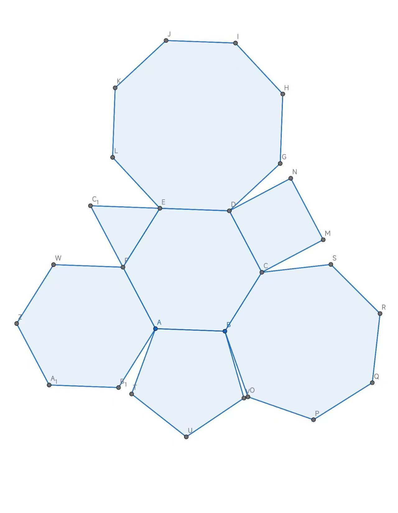

At the Geometry Inn
Just as we had arranged, I and five other classmates—all fellow members of the Spirit Investigation Society—gathered punctually at seven in the evening before the door of a dilapidated building.
“So this is the Geometry Inn, the one with the reputation as the fastest-ever haunted house of doom?” one of the boys said. Hearing this, the girl beside me edged a little closer to my side.
“Well put—this is the Geometry Inn,” the upperclassman, who I gathered was the head of the Investigation Division, nodded. “But before anything else, let’s introduce ourselves. After all, this is the first outing for you freshmen.” He glanced around at us and went on: “I’ll start. I’m Xia Yiyan, a junior, head of the Investigation Division of the Spirit Investigation Society. Now please introduce yourselves in clockwise order.”
“My name is Fan Wenyuan, a first-year freshman, and I’m really into the supernatural!” This was the boy who’d just mentioned the fastest-ever haunted house. His voice was bursting with enthusiasm.
“I’m Lin Muxian, a first-year freshman. Pleased to meet you all,” I said briefly.
“I’m Jiang Yuwei, also a first-year.” This girl beside me had been my close friend since high school; we’d gone on to the same university together, and I’d talked her into joining the Spirit Investigation Society with me.
“I’m Wu Ji. I’m a sophomore, but I just joined the club.” This boy did indeed look a bit more mature.
“My name is He Ping, also a freshman. Looking forward to working with you all.” said the boy with glasses.
Once we had all finished, Xia Yiyan began describing the place vividly: “The place we’re going to explore today is the so-called ‘fastest-ever haunted house of doom,’ the Geometry Inn. That nickname comes from the fact that someone died inside it a mere three days after it opened for business. The inn declined rapidly after that, and before long it closed for good. And because the structure here is so peculiar, no one was willing to take it over—so it has stood abandoned ever since.”
“Peculiar structure? Peculiar how?” Fan Wenyuan asked impatiently. Hearing this, Xia Yiyan gave a little smile and said, “Well, we won’t keep you in suspense—let’s go into the lobby first and take a look.”
Our party filed in one after another, entering the inn through the front door. The moment I stepped inside, I began to understand why this inn was called the Geometry Inn—the lobby was a room in the shape of an equilateral triangle, with sides that looked to be about six meters long. The front door we’d entered by was on one of the sides; the other two sides were the front desk and the door leading deeper into the inn.
Xia Yiyan walked over near the front desk and fished out a big bunch of keys from behind it. He gripped the keys in his hand, letting only the toothed ends show.
“Before we go further, to ensure your safety while you investigate here, the other club old-timers and I have already made a trip and looked the place over from top to bottom. You can rest assured—there’s nothing too dangerous, so long as you don’t trip and fall from scaring yourselves. What I’m holding are the keys to every door in the whole inn,” Xia Yiyan said, drawing one out from his hand as he spoke. “Apart from this one, which is used to open the door to the inner hall, the other five each correspond to one room. For the sake of fairness, you’ll draw them at random—how about it?”
“Captain, why do we even need to draw? Is there some difference between the rooms?” asked the boy who I believe was called Fan Wenyuan.
“Also… which room is the one where someone… died?” Jiang Yuwei asked timidly, leaning into me again at the same time.
Xia Yiyan did not answer, but instead asked the group: “You really don’t know, any of you?”
Seeing everyone shake their heads, Xia Yiyan gave a soft chuckle and said, “That’s just as well—the experience will be more thrilling for you. Ha ha…”
Seeing the looks of disdain on all our faces, Xia Yiyan grew a little awkward, cleared his throat, and began to explain: “The reason it’s called the Geometry Inn is that the layout here is rather special—every room is a regular polygon. To be precise, there are in total six regular-polygon rooms with equal side lengths, and in the middle they enclose a regular hexagonal common hall—seven rooms in all. The six surrounding rooms are, respectively, the regular triangle through the regular octagon. The front-desk lobby we’re standing in now is the equilateral-triangle room. And apart from this one, the other five rooms are all guest rooms.
“From a construction standpoint this place is actually quite well made—the walls have excellent sound and heat insulation, and every wall is of the same thickness throughout. We measured earlier: the side length of each room, seen from inside, is five meters.
“By rights the doorway of each room should have a nameplate marking the room’s number, but because of the passage of time, all the nameplates are damaged. In other words, in a moment you’ll need to try inserting your key into the keyhole of each door one by one to find out whether it opens, and only then can you finally confirm which room is yours. The numbers on the keys, however, are still all clearly legible. Oh—the number corresponds to the number of sides of the room.
“As for which room someone died in—I’d better not tell you, or whoever draws that key will be under a great deal of psychological pressure, and the others would have things relatively too easy by comparison.”
Having finished, Xia Yiyan looked around at all of us and watched us quietly. We looked at one another; a tense atmosphere had already been conjured up during the recitation of the rules, just like playing some eerie rules-based ghost story.
“Captain, can’t you give us a hint? Otherwise it’s really too scary…” Jiang Yuwei’s voice trembled slightly.
“Ah, so it goes…” Xia Yiyan scratched his head, thought for a moment, let out a long sigh, and said reluctantly, “All right, since it’s your first outing, I’ll make an exception—the number of the room where the incident happened is even.”
Even. If the room numbers run from 4 to 8, that still leaves three of them. Xia Yiyan held the key shafts engraved with the numbers in his fist, letting only the irregular, patternless teeth show, and had us draw. “Come on, everyone take one.”
One by one we lined up; each of us drew a key, then nervously inched our fingers along so the number would reveal itself bit by bit. Mine was number 8—not exactly safe. But then it isn’t dangerous to begin with.
“Aah!” The cry from Jiang Yuwei beside me gave me quite a start. No need to guess—she must have drawn an even number; she’s always been a coward. “Hey, hey,” she poked me, “what number did you get?”
“I got number 8—no use swapping with me,” I declared firmly, with a pout.
“Aww…” came her dejected voice.
“Um, Jiang, how about you swap with me? I’ve got number 5.” The bespectacled boy who I believe was called He Ping had walked over. I hadn’t expected this guy to be so chivalrous.
“You jerk—why wouldn’t you swap when I asked you!” came Fan Wenyuan’s furious voice. “You value love over friendship!” He Ping turned around and stuck out his tongue at Fan Wenyuan: “Number 4 is just too unlucky—it sounds more like the room where the incident happened, doesn’t it? You’d better toughen up too. Next time, after watching a horror movie, don’t lie awake all night again, rolling around and making the bed creak.” “Shut up!” It seemed these two were roommates.
Wu Ji also came over to me. “I’ve got number 7—how about I swap with you?” “No thanks, I’ll respect the result of the draw. That way the experience is a bit more intense, too.” I smilingly declined Wu Ji’s kind offer.
Into the Inn
After the key-swapping incident was over, Xia Yiyan, with great ceremony, slowly pushed open the door leading to the common hall. “Who wants to go in first?” The few of us looked at one another; no one made a sound. Seeing us all shrink back, the captain grew a little awkward, too. “How about one of you boys steps up first? There’s only one sophomore here, right—Wu Ji, why don’t you give it a try?”
“No, no…” Wu Ji hurriedly waved his hands and took two steps back. “I’m a coward—there’s no way I want to be the first to go in.” Honestly—a coward, and yet he still joined the Spirit Investigation Society?
Just then, Fan Wenyuan raised his hand. “How about I go first?”
“Good, good—our society needs a brave soul like you!” Xia Yiyan encouraged him, then went on: “The old club rule: keep an eye on the time, come back out within fifteen minutes, and in the meantime enjoy your solo spirit-investigation journey. The number 4 key is in Fan Wenyuan’s hands, right?” Fan Wenyuan stepped forward with a tense expression. “Good luck!”

The five of us watched Fan Wenyuan walk in, trembling. Then Xia Yiyan shut the door, and we could hardly hear any sound from inside at all.
For the remaining fifteen minutes the five of us had nothing to do. Fan Wenyuan seemed to have vanished completely into the depths of the inn; not a trace came back to us. From this we could already tell how deathly silent it would be once we went in. Perhaps you could even hear the echo of your own heartbeat clearly.
The fifteen minutes passed in our chatter—in fact, it was only fourteen minutes before Fan Wenyuan came out. When he pushed open the door, it even startled us. Xia Yiyan smiled and patted Fan Wenyuan on the shoulder: “The vanguard who led the charge returns safely! Care to share?”
Fan Wenyuan described it eagerly and vividly: “It’s really quiet in there! And so dark—I could only see things with my flashlight. And it’s all run-down; the room is full of spiderwebs.”
“Did you see anything strange in the room, like blood?” He Ping asked jokingly.
“Nothing like that. I looked very carefully—I turned over every corner, though I did spend quite a while steeling myself before opening the first cabinet.”
“Did you have any trouble getting in?” I asked as well.
“The door was fine—I just had to try two doors before one opened. The door has a keyhole and a handle. If you insert the wrong key into the hole, it won’t turn; if it does turn, there’s a click, and then the handle can be pressed down to open the door. The handle mechanism and all that are quite smooth. I also tried the handle and keyhole of every room door—and indeed none of them could be opened directly; if you haven’t inserted the correct key, the key won’t turn and the handle can’t be pressed down.”
The next to volunteer to go in was He Ping, who had swapped with Jiang Yuwei for the number 6 room key. The rest of us chatted idly outside to pass the time. But compared with Fan Wenyuan, who had already come out, and Captain Xia Yiyan, those of us who hadn’t yet gone in were even more nervous.
He Ping used up almost the full fifteen minutes before he came out. When we asked what had happened inside, he merely shrugged and said, “The room was pretty dark and old, but there was nothing special, really. About the same as what Fan Wenyuan said—except that the room I entered was a regular hexagon.”
I was about to go in next. But Jiang Yuwei called out to me: “Mu-mu, I feel like the longer I wait the scarier it gets… I’m right in the middle of the order now—do you think I should just go now?” She had a point, too; it was rare for this girl to look so bold for once, so I decided to encourage her. “True—good luck!” When Jiang Yuwei raised her hand, Xia Yiyan’s eyes even widened a little, then he smiled and encouraged her, too: “Very good—I’m counting on you!” So the next to go in was Jiang Yuwei. Before going in she clung tightly to my shoulder. I gave her a hug and comforted her: “If anything happens, just run out early—don’t push yourself. And besides, the room you’re going to isn’t one where anyone died, so don’t worry too much.” Jiang Yuwei wore an expression on the verge of tears, but she gritted her teeth and walked in. As Xia Yiyan shut the door, Jiang Yuwei too disappeared into the depths of the inn.
In about seven or eight minutes, Jiang Yuwei came back. The instant she saw us, she let out a heavy breath, as if a great stone in her heart had finally dropped to the ground. “There really wasn’t anything dangerous inside, but I kept feeling as if someone somewhere was watching me—it was pretty scary!”
“That’s just you scaring yourself,” I said disdainfully. Jiang Yuwei smacked me. “It is not. Oh—my experience opening the door after I went in was the same as what Fan Wenyuan said. I tried the first room, and the key really wouldn’t turn; the second one turned. The room inside was a regular-pentagon layout—quite odd, really. I investigated very thoroughly!” In fact, judging by the time, she must have huddled at the doorway without investigating at all, until she scared herself past the point of bearing it, and then ran out.
Blood for Blood
Now only Wu Ji and I were left. I had just raised my hand when Wu Ji’s hand went up too. “Lin Muxian, I think… I’m a guy, so I should go first—otherwise it’d be too embarrassing.” “Not at all—being afraid is only human. Good luck!” To Wu Ji’s sudden burst of courage, I responded with encouragement, too. Wu Ji, holding the number 7 key, walked into the depths of the inn. Sigh—why did the closing slot have to fall to me? The tension of going last is by no means less than going first. But strangely, after fifteen minutes had passed, there was still no sign of Wu Ji coming out. “Why hasn’t Wu Ji come out yet?” Jiang Yuwei had noticed it too.
Fan Wenyuan said, “Maybe the room is bigger and harder to finish searching. After all, I went into the square room, while he went into the regular heptagon.” That said—would they really comb through every corner the way an anti-smuggling team would?
Another five minutes passed, and Wu Ji still hadn’t come out. None of us could hide the worry on our faces. Xia Yiyan said, “Let’s go in together and take a look—has something happened?”
Xia Yiyan pushed open the door, and the dim, run-down interior came into full view, though you could still faintly make out the once-careful decoration. The door of the room directly opposite stood open by a crack—what was going on?
Five flashlights shone over at once. We all rushed toward the door opposite. Xia Yiyan was just about to push the door when He Ping suddenly called out to him: “Stop!”
Xia Yiyan was startled and looked at He Ping in puzzlement. He Ping waved his flashlight around the door handle, and only then did we notice what looked like bloodstains on the handle. This might be evidence from the scene, so Xia Yiyan didn’t touch the handle again; instead he carefully kicked the door open with his foot. Inside, Wu Ji already lay there, his face full of pain, unconscious.
On the floor beside Wu Ji was a note, on which was scrawled in crooked handwriting: “Wu Ji—blood for blood.”
Xia Yiyan went up and felt the carotid artery, then pulled back Wu Ji’s eyelid and shone the flashlight at it, then said to us regretfully, “Call the police. Wu Ji is probably already dead.”
To be safe, we dialed both 110 and 120 at the same time, and while we waited we all stayed at the doorway and didn’t touch anything else inside the inn. Soon the police took over the scene. Wu Ji was confirmed dead. On the handle of the door to room 7, the police found a razor blade stuck to it; on the blade they detected a powerful poison, lethal even if only a little entered the bloodstream. But contrary to Jiang Yuwei’s feeling that someone seemed to be watching her, no one besides us was found at the scene of the inn. Nor was any exit to the outside found inside the inn other than the triangular front desk, and there was no secret passage of any kind.
Naturally, we were all taken back to give statements. My suspicion was the least, because before Wu Ji died I had never gone into the inn at all, and so had had no opportunity to install the blade. The others were released one after another as well; it seemed the police had gotten nothing out of them. Xia Yiyan was questioned the longest—perhaps they were trying to learn more about the situation from him? In the end he too was released. Of everything everyone had said at the Geometry Inn, all of it that could be judged true or false through examination of the scene was confirmed true by the police investigating the scene. In other words, no one had lied. On everyone’s face was a mixture of solemnity and fear.
The autopsy results came out. The only wound on Wu Ji’s body was on his hand; the deadly poison on the blade was the direct cause of death.
The police had the handwriting on the note examined. The writer had apparently deliberately disguised their handwriting, and the writer of the note could not be identified. The police also investigated Wu Ji’s life to see whether he had any enemies, but found only that he lived an ordinary life, with simple interpersonal relationships, did not associate with people from broader society, and spent most of his free time online.
That night, back in the dormitory, I still couldn’t stop thinking about the incident from the evening. “Muxian, will you come with me to buy a late-night snack?” Jiang Yuwei poked me. She probably didn’t even dare go out alone now. I wanted to clear my head, too, so I went out with her.
“Hey,” something suddenly occurred to me, and I asked, “which room did you open this evening, again?” “Why are you still thinking about that? Let’s not bring it up, please.” “Tell me quickly, or I’ll run straight back to the dorm right now and leave you here alone.” “Don’t, don’t—why do you have to threaten me over this too? It was the second room on the right—I had the number 5 room.”
Suddenly I began to have a thread to follow. Sitting at the late-night-snack stall, shoveling stir-fried rice noodles into my mouth, the shadow of that evening’s case gradually grew clear in my mind.
幾何旅館にて
約束どおり、私と、同じく探霊サークルのメンバーである他の五人のクラスメイトは、夕方七時きっかりに、とある古びた建物の前に集まった。
「これが、あの『最速で化け物屋敷になった伝説の幽霊屋敷』こと幾何旅館か？」と一人の男子が言った。それを聞いて、隣にいた女子が私のほうへ少し身を寄せた。
「そのとおり、これが幾何旅館だ」と、調査部の部長だと記憶している先輩がうなずいて言った。「だがまずは、お互い自己紹介といこうじゃないか。何しろ、これは君たち新入生の最初の活動だからな」先輩はぐるりと一同を見回し、続けた。「私から始めよう。私は夏一言、三年、探霊サークル調査部の部長だ。では時計回りの順に自己紹介を頼む」
「僕は范文遠、一年の新入生で、心霊現象に興味津々です！」さっき最速の幽霊屋敷うんぬんと言っていたのがこの男子だった。声に熱意がみなぎっている。
「私は林沐弦、一年の新入生です。よろしくお願いします」と私は簡潔に言った。
「私は江雨薇、同じく一年の新入生です」私の隣にいるこの女子は高校時代からの親友で、一緒に同じ大学に進み、私にそそのかされて一緒に探霊サークルに入ったのだ。
「僕は呉驥、二年だけど、サークルに入ったのは最近なんだ」この男子は確かに少し大人びて見えた。
「僕は何平、同じく一年です。どうぞよろしくお願いします」と眼鏡をかけた男子が言った。
私たちが皆紹介を終えると、夏一言は生き生きと語り始めた。「今日われわれが探索する場所は、人呼んで『最速で化け物屋敷になった伝説の幽霊屋敷』、すなわち幾何旅館だ。このあだ名の由来は、この店が開業からわずか三日で中で人が死んだことにある。その後この旅館は急速にさびれ、ほどなくして閉店してしまった。そしてここは構造があまりにも奇妙なせいで、引き取ろうという者も現れず、今日まで廃墟のまま放置されているというわけだ」
「構造が奇妙？どんなふうに奇妙なんです？」范文遠が待ちきれない様子で尋ねた。それを聞いて夏一言はくすりと笑い、「ならば、もったいぶらずに、まずはロビーに入って見てみようじゃないか」と言った。
私たち一行は次々と、正面の扉から旅館へ入っていった。中に入った途端、私はこの旅館が幾何旅館と呼ばれる理由が少しわかった気がした——ロビーは正三角形の部屋で、一辺はおよそ6メートルほどに見えた。入ってきた正面扉は一辺にあり、残りの二辺はそれぞれフロントと、旅館の奥へ通じる扉だった。
夏一言はフロントの近くまで歩いていき、フロントの後ろから大きな鍵束を取り出した。彼は鍵を握りしめ、歯の部分だけを見せていた。
「その前に、ここで君たちが安全に調査できるよう、私と他のサークルの古株連中とで一度下見に来て、ここをひととおり見て回ってある。安心したまえ、大した危険はない。自分で自分を怖がって転びさえしなければな。私が手にしているのは、旅館じゅうのあらゆる扉の鍵だ」と夏一言は言いながら、手の中から一本を引き抜いた。「これは内ホールへ通じる扉を開けるためのもので、それ以外の五本はそれぞれ一つの部屋に対応している。公平を期すために、君たちにはランダムに引いてもらおう。どうかな？」
「部長、なんで引かなきゃならないんです？部屋ごとに何か違いでもあるんですか？」范文遠という名前だったと思う男子が尋ねた。
「あと……どの部屋で……人が死んだんですか？」と江雨薇がおずおずと尋ね、同時にまた私に身を寄せてきた。
夏一言は答えず、代わりに一同に問いかけた。「君たち、本当に誰も知らないのか？」
皆が首を横に振るのを見て、夏一言は軽く笑い、こう言った。「それならそれでいい。君たちの体験がより刺激的になるからな、はは……」
私たちが皆あからさまに白い目を向けるのを見て、夏一言は少し気まずそうに軽く咳払いをして説明を始めた。「ここが幾何旅館と呼ばれるのは、ここの間取りがかなり特殊で、どの部屋も正多角形だからだ。具体的に言えば、辺の長さの等しい正多角形の部屋が全部で六つあり、その真ん中にもう一つ正六角形の共用ホールを囲み込んでいて、合わせて七つの部屋がある。周囲の六つの部屋は、それぞれ正三角形から正八角形までだ。今われわれがいるこのフロントのロビーが正三角形の部屋というわけだ。そしてこの部屋を除けば、残りの五部屋はすべて客室だ。
「ここは建築という観点から見ればなかなか立派なもので、壁の防音・断熱はきわめて優れているし、どの箇所も厚さが同じだ。先ほど測ってみたが、部屋の一辺の長さは、室内から見ればどれも5メートルだ。
「部屋の入口には、本来なら部屋番号を示す表札があるはずなんだが、年月がたったために、表札はすべて壊れてしまっている。つまり、君たちはこれから鍵を一つ一つ鍵穴に差し込んでみて、扉が開くかどうかを確かめ、ようやく自分の部屋を確定することになる。ただし鍵に刻まれた番号のほうは、どれもまだはっきり読める。ああ——番号は部屋の辺の数に対応している。
「どの部屋で人が死んだかについては、私からは言わないほうがよかろう。さもないと、その鍵を引いた者は心理的な負担が大きいだろうし、ほかの者は相対的に体験が楽になりすぎてしまうからな」
言い終えると、夏一言は皆をぐるりと見回し、静かに私たちを見つめた。私たちは互いに顔を見合わせた。緊張した空気は、すでにルールを読み上げる段階で作り出されていて、まるで何かの「ルール怪談」をやっているかのようだった。
「部長、ヒントをくださいよ、じゃないと本当に怖すぎます……」江雨薇の声はかすかに震えていた。
「ああ、そうか……」夏一言は頭をかき、しばらく考えて、長いため息をつき、しぶしぶ言った。「わかった、君たちの最初の活動だから、特別に例外としよう——事件のあった部屋の番号は偶数だ」
偶数か。部屋番号が4から8だとすると、それでもまだ三つあるな。夏一言は番号の刻まれた鍵の柄を握りしめ、規則性のまるでない鍵の歯だけを見せて、私たちに引かせた。「さあ、みんな一本ずつ引いてくれ」
私たちは一人ずつ列に並び、それぞれ鍵を一本引いて、それから皆びくびくしながらゆっくりと指をずらして、番号を少しずつあらわにしていった。私のは8番か、あまり安全とは言えないな。もっとも、そもそも危険などないのだが。
「きゃっ！」隣の江雨薇の叫び声に、私のほうがびくっとした。考えるまでもなく、きっと偶数を引いたのだろう。彼女はいつも臆病だからな。「ねえねえ」と彼女は私をつついた。「あなたは何番引いたの？」
「私は8番を引いたよ、私と換えても無駄だからね」と私は口をとがらせ、きっぱりと宣言した。
「あう……」と落胆した声が聞こえてきた。
「あの、江さん、よかったら僕と換えませんか？僕のは5番です」何平という名前だったと思う眼鏡の男子が歩み寄ってきた。こいつがこんなに騎士道精神にあふれているとは思わなかった。
「おまえ、僕が換えてくれって言ったときはなんで換えなかったんだよ！」と范文遠の腹を立てた声が聞こえてきた。「色を友より重んじるやつめ！」何平は振り返って、范文遠に向かって舌を出した。「4番はやっぱり縁起が悪すぎるんだよ、いかにも事件のあった部屋っぽいだろ。おまえも少しは鍛えろよ、今度ホラー映画を見たあと、また夜中に眠れなくてゴロゴロ転がってベッドをきしませるんじゃないぞ」「うるさい！」どうやらこの二人はルームメイトらしい。
呉驥も私のほうへ歩み寄ってきた。「僕のは7番なんだけど、よかったら僕と換える？」「いいえ、私はくじの結果を尊重するよ。そのほうが体験も強烈になるしね」私は笑って呉驥の好意を断った。
旅館の奥へ
鍵の交換騒ぎが終わると、夏一言はいかにも儀式めかして、ゆっくりと共用ホールへ通じる扉を押し開けた。「誰が最初に入りたい？」私たち数人は互いに顔を見合わせ、誰も声を出さなかった。私たちが皆おじけづいているのを見て、部長も少し気まずそうにした。「では、男子の誰か一人、先に名乗り出てくれないか？ここに二年は一人だけだろう、呉驥、君が試してみないか？」
「いえいえ……」呉驥はあわてて手を振り、二歩あとずさった。「僕は気が小さいので、何があっても最初に入るのだけは嫌です」まったく、気が小さいのに探霊サークルに入ったのか。
ちょうどそのとき、范文遠が手を挙げた。「じゃあ、僕が最初に行きましょうか」
「いいぞ、いいぞ、わがサークルには君のような勇者が必要だ！」と夏一言は励まし、さらに続けた。「サークルの昔からの決まりだ、時間をよく見て、十五分以内に出てくること。その間、ひとりきりの探霊の旅を楽しみたまえ。4番の鍵は范文遠の手にあるんだったな？」范文遠は緊張した面持ちで前に進み出た。「がんばれよ！」
私たち五人は、范文遠がおそるおそる中へ入っていくのを見送った。続いて夏一言が扉を閉めると、私たちには中の物音がほとんどまったく聞こえなくなった。
残された五人はこの十五分のあいだ、これといってすることもなかった。范文遠はまるで旅館の奥深くに完全に消えてしまったかのようで、何の気配も伝わってこない。ここからも、あとで中に入ったらどれほど静まり返っているかがうかがえた。おそらく自分の心臓の鼓動のこだまさえはっきり聞こえるだろう。
十五分はおしゃべりのうちに過ぎていったが、実際には十四分で范文遠は出てきた。彼が扉を押し開けたとき、私たちは思わずびくっとしたほどだ。夏一言は笑って范文遠の肩をたたいた。「先陣を切った先鋒の無事の帰還だ！どうだ、聞かせてくれないか？」
范文遠は待ちきれない様子で生き生きと語った。「中は本当に静かでした！それにすごく暗くて、懐中電灯を当ててやっと物が見えるくらいで。しかもぼろぼろで、部屋じゅうクモの巣だらけでしたよ」
「部屋の中に血みたいな怪しいものは見なかったか？」と何平が冗談めかして尋ねた。
「そんなものはありませんでしたよ。すごく念入りに見て、どの隅もひっくり返して調べました。もっとも、最初の戸棚を開ける前には、かなり長いこと心の準備をしましたけどね」
「入るのはすんなりいったかい？」と私も一言尋ねた。
「扉は大丈夫でした。ただ、二つの扉を試してやっと一つが開いたんです。扉には鍵穴と取っ手があって、間違った鍵を穴に差し込んでも回らない。回ればカチッと音がして、そのとき取っ手を押し下げれば扉が開くんです。取っ手の仕掛けなんかはどれも滑らかでした。僕は全部の部屋の扉の取っ手と鍵穴も一通り試してみたんですが、確かにどれも直接は開けられませんでした。正しい鍵を差し込んでいなければ、鍵は回らないし、取っ手も押し下げられないんです」
次に自ら進んで入っていったのは、江雨薇と換えて6番の部屋の鍵を手にした何平だった。私たち数人は外で適当におしゃべりをして時間をつぶした。だが、すでに出てきた范文遠や部長の夏一言に比べると、まだ入っていない私たちのほうが、いっそう緊張していた。
ほぼ十五分をめいっぱい使って、何平はようやく出てきた。中で何があったのか尋ねると、彼はただ肩をすくめて言った。「部屋はわりと暗くて古かったけど、別に特別なことは何もなかったよ。范文遠が言ってたのとだいたい同じさ。ただ、僕が入った部屋は正六角形だったけどね」
私が次に入ろうとした。だが江雨薇が私を呼び止めた。「沐沐、待てば待つほど怖くなる気がするの……今ちょうど順番の真ん中だし、いっそ今行ったほうがいいと思う？」彼女の言うことにも一理あったし、めったにないことにこの子も大胆になったように見えたので、私は励ましてやることにした。「確かにね、がんばって！」江雨薇が手を挙げたとき、夏一言は目を少し見開きさえし、すぐに笑って彼女を励ました。「いいぞ、期待しているよ！」というわけで、次に入ったのは江雨薇だった。江雨薇は入る前にもまだ私の肩にぴったりと縮こまっていた。私は彼女を抱きしめてなだめた。「何かあったら、早めに走り出てきていいからね、無理しないで。それに、あなたが行く部屋は人が死んでいない部屋だから、あまり心配しないで」江雨薇は今にも泣き出しそうな表情をしていたが、それでも歯を食いしばって中へ入っていった。夏一言が扉を閉めるとともに、江雨薇もまた旅館の奥深くへと消えていった。
七、八分ほどで、江雨薇は戻ってきた。彼女は私たちを目にした瞬間、まるで心の中の大きな石がようやく地に落ちたかのように、大きく息をついた。「中は確かに危険なものは何もなかったけど、どこかから誰かに見られているような気がずっとして、けっこう怖かった！」
「それこそあなたが自分で自分を怖がってるだけでしょ」と私は小ばかにして言った。江雨薇は私をぴしゃりとたたいた。「違うってば。ああ、私が入ってから扉を開けた経験は、范文遠さんが言ってたのと同じだったよ。最初の一つを試したら、鍵は確かに回らなくて、二つ目で回ったの。中の部屋は正五角形の間取りで、なんとも奇妙だったわ。私すごく念入りに調べたんだから！」もっとも時間から見て、きっとまったく念入りになどせず入口で縮こまっていて、自分で自分を怖がって耐えられなくなったところで、走り出てきたに違いない。
血には血を
あとは私と呉驥だけになった。私が手を挙げたちょうどそのとき、呉驥の手も挙がった。「林沐弦さん、僕は……男だから、やっぱり僕が先に行きますよ。じゃないとあまりにみっともないので」「そんなことないよ、怖いのは人として当たり前のことだもの。がんばって！」呉驥の突然の勇気に、私もまた励ましで応えた。7番の鍵を手にした呉驥は旅館の奥深くへと入っていった。ああ、どうして私がトリなんだ。トリの緊張感は、口火を切る役にまったく劣らないというのに。だが奇妙なことに、十五分が過ぎても、呉驥が出てくる気配はまだなかった。「どうして呉驥はまだ出てこないの？」江雨薇もそれに気づいていた。
范文遠が言った。「たぶん部屋が大きくて、調べ終えるのに手間取ってるんじゃないかな。何しろ僕が入ったのは正方形だけど、彼が入ったのは正七角形だからね」とはいえ、彼らが本当に密輸取締班のように隅から隅まで徹底的に捜索したりするものだろうか？
さらに五分が過ぎても、呉驥はやはり出てこなかった。私たちは誰もが顔に心配を隠せなくなっていた。夏一言が言った。「みんなで一緒に入って見てみよう。何かあったんじゃないか？」
夏一言が扉を押し開けると、中の薄暗くぼろぼろな様子が一望のもとに見渡せたが、それでもかつての凝った内装をかすかに見て取ることはできた。真向かいの部屋の扉が、わずかに隙間を開けていた——どういうことだ？
五本の懐中電灯がいっせいにそちらを照らした。私たちは次々と向かいの扉へ駆け寄り、夏一言がまさに扉を押そうとしたとき、何平が突然夏一言を呼び止めた。「待って！」
夏一言はびくっとして、いぶかしげに何平を見た。何平が懐中電灯で取っ手のあたりを照らすと、私たちはそこでようやく、取っ手に血痕のようなものがあるのに気づいた。これは現場の証拠かもしれないと、夏一言はもう取っ手には触れず、慎重に足で扉を蹴り開けた。中では、呉驥がすでに苦痛に満ちた顔で意識を失って横たわっていた。
呉驥のかたわらの床には一枚のメモがあり、そこには曲がりくねった字で「呉驥 血には血を」と書きなぐられていた。
夏一言は近寄って頸動脈に触れ、さらに呉驥のまぶたをめくって懐中電灯で照らし、それから残念そうに私たちに言った。「警察を呼ぼう。呉驥はおそらくもう死んでいる」
念のため、私たちは110番と120番を同時にかけ、待っているあいだは皆扉のところにとどまって、旅館の中のものにはもう何も触れなかった。ほどなくして警察が現場を引き継いだ。呉驥は死亡が確認された。7番の部屋の扉の取っ手には、警察が貼りつけられたカミソリの刃を発見し、その刃からは強力な毒物が検出された。血液に少量入っただけでも致死に至るものだった。だが江雨薇が誰かに見られているように感じたのとは違って、旅館の現場には私たち以外の人間は誰も発見されなかった。旅館内にも、三角形のフロント以外に外部へ通じる出口は一切見つからず、いかなる秘密の通路もなかった。
当然のことながら、私たちは皆連れ戻されて供述を取られた。私の容疑が最も小さかった。なぜなら呉驥が死ぬ前、私はそもそも旅館に一度も入っていなかったので、刃を仕掛ける機会もなかったからだ。ほかの者たちも次々と解放された。どうやら警察は何も聞き出せなかったらしい。夏一言が尋問された時間が最も長かったのは、おそらく彼からより多くの状況を聞き出そうとしていたからだろうか？最後には彼も解放された。皆が幾何旅館で口にしたことのうち、現場検証によって真偽を判断できるものは、すべて現場検証にあたった警察によって真実だと確認された。つまり、誰も嘘をついていなかったのだ。誰の顔にも、厳粛さと恐怖が入り混じっていた。
検死の結果が出た。呉驥の体にあった唯一の傷は手にあり、刃に塗られた猛毒が直接の死因だった。
警察はメモの筆跡を鑑定した。書いた者はわざと筆跡を偽装していたらしく、メモの書き手を特定することはできなかった。警察は呉驥の生活も調べ、彼に仇敵がいなかったか確かめたが、わかったのは、彼が平凡な暮らしをしていて、人間関係も単純で、世間の人々とは交わらず、空き時間のほとんどをネットに費やしていた、ということだけだった。
夜、寮に戻っても、私は夕方の出来事をどうしても忘れられずにいた。「沐弦、夜食を買いに付き合ってくれない？」と江雨薇が私をつついた。彼女はもう一人で外に出るのも怖いのだろう。私も気晴らしをしたかったので、彼女に付き合って外へ出た。
「ねえ」とふと何かを思いついて、私は尋ねた。「今日の夕方、あなたが開けたのはどの部屋だったっけ？」「どうしてまだそんなこと考えてるの、もう持ち出さないでよ」「早く言って、じゃないと今すぐ寮に走って帰って、あなた一人をここに残していくよ」「だめだめ、どうしてこんなことでまで私を脅すの。右手の二番目の部屋よ、私は5番の部屋だもの」
私はふと手がかりがつかめてきた気がした。夜食の屋台に座り、口に焼きビーフンをかき込みながら、私の頭の中で、夕方のあの事件の影が次第にはっきりしてきた。
几何旅馆
和约好的那样，我，和另外五位同为探灵社成员的同学，在傍晚七点准时聚集在一间破旧的建筑门前。
“这就是素有‘闹鬼凶宅最速传说’的几何旅馆吗？”一位男生说道。听到这话，一旁的女生向我这边靠了靠。
“说得不错，这就是几何旅馆。”那个印象中是调查部部长的学长点了点头说道，“不过，我们还是先互相介绍一下吧，毕竟这是你们新生的第一次活动嘛。”学长环视了一圈，继续说道：“我先来，我是夏一言，大三，探灵社调查部部长。接下来请按顺时针顺序自我介绍吧。”
“我叫范文远，大一新生，对灵异很感兴趣！”刚才说到什么最速闹鬼凶宅的就是这个男生了。声音充满激情啊。
“我是林沐弦，大一新生，请多关照。”我简洁地说道。
“我是江雨薇，也是大一新生。”我身边这位女生和我在高中就是闺蜜，一起上了同一所大学，也被我怂恿着一起加入了探灵社。
“我是吴骥，我是大二生，但是刚加入社团。”这位男生确实看着也成熟一些。
“我叫何平，也是大一的，请多多关照啦。”戴眼镜的男生说道。
看我们都介绍完了，夏一言便开始绘声绘色地介绍到：“今天我们要探索的地方，就是人称‘闹鬼凶宅最速传说’的几何旅馆。这个绰号，源自这家店开张仅仅三天就有人死在里面。之后这家旅馆就很快衰落，没过多久便关门大吉了，而由于这里的结构太过古怪，也没人愿意接手，便废弃至今。”
“结构古怪？怎么个古怪法？”范文远急不可耐地问道。夏一言听了，笑了一下说道：“那我们也不卖关子，先进大厅去看看吧。”
我们一行人鱼贯而入，从正门走进了旅馆。刚进门，我便有些明白这家旅馆叫做几何旅馆的原因了——大堂是个正三角形的房间，边长目测有6米左右。进入的大门在一条边上，另外两条边分别是前台和通往旅店深处的大门。
夏一言走到前台附近，在前台后面摸出来一大把钥匙。他把钥匙攥在手里，只露出齿部来。
“在此之前，为了保证你们来这里调查的安全，我和其他社团老东西们已经来过一趟，把这里基本上都看了一遍了，你们可以放心，没什么大危险，只要别被自己吓到摔一跤就行。我手上的就是整间旅馆的所有门的钥匙，”夏一言一边说着，一边从手中抽出一把来，“除了这把是用来打开通向内厅的之外，另外五把分别对应一个房间，为了公平起见，你们随机抽，如何？”
“部长，为啥还要抽啊，每间房间有什么区别吗？”应该是叫范文远的男生问道。
“还有，哪件房间……死过人啊？”江雨薇怯生生地问道，同时往我身上也靠了靠。
夏一言没有回答，而是问向众人：“你们都不知道吗？”
见众人都在摇头，夏一言轻笑了一下，说道：“这样也好，你们的体验比较刺激，哈哈……”
见我们都一脸鄙夷，夏一言也是有点尴尬，轻咳了一声开始介绍：“这里之所以叫几何旅馆，是因为这里的布局比较特殊，每个房间都是正多边形。具体地说，一共有六个边长相等的正多边形房间，在中间再围出了一个正六边形公共厅，一共七个房间。而周围的六个房间，分别是正三到正八边形。我们现在身处的前台大堂就是正三角形的房间。而除了这间，其他五间房都是客房。
“这里从建设的角度来看还是相当不错的，墙壁隔音隔热十分出色，而且每处厚度都相同。我们之前量了一下，房间的边长从房内来看都是5米。
“房间门口按理来说是有门牌标出房间的编号的，但由于时代久远，门牌全部都已经损坏了。也就是说，你们等会需要挨个尝试将钥匙插进钥匙孔，才知道能不能打开门，才能最终确认自己的房间。不过钥匙上的编号还是都清晰的。噢，编号对应的就是房间的边数。
“至于哪间死过人嘛，我也不好告诉你们，不然抽到那把钥匙的人心理压力会很大吧，其他人相对地体验也会太过于轻松了。”
夏一言说完，环视了大家一圈，静静地看着我们。我们面面相觑，紧张的气氛已经在宣读设定时营造出来了，就好像在玩规则怪谈一样。
“部长，能提示提示嘛，不然真的很恐怖吧……”江雨薇的声音微微颤抖。
“啊，这样啊……”夏一言挠了挠头，想了一会，长叹了一口气，不情愿地说道，“好吧，看你们第一次活动就破个例好了——出过事的房间编号是偶数。”
偶数，房间号从4到8的话，还是有三个吧。夏一言手握着刻有编号的钥匙柄，只露出毫无规律的钥匙齿来，让我们抽取。“来吧，都来抽一把吧。”
我们一个个地排好队，每个人都抽了一把钥匙，然后都紧张兮兮地慢慢挪动手指，让编号一点一点显露。我的是8号啊，不算安全呢。不过本来就不危险吧。
“啊！”身旁江雨薇的叫声倒是吓了我一跳。不用猜，肯定是抽到了偶数吧，她也是一贯胆小了。“喂喂，”她戳了戳我，“你抽到的是多少啊？”
“我抽到了8号，和我换也没用的啊。”我撇了撇嘴，严正声明道。
“啊呜……”沮丧的声音传来。
“那个，江同学，要不你和我换吧？我拿的是5号。”那个应该是叫何平的戴眼镜的男同学走了过来。没想到这小子还挺有骑士精神的嘛。
“你这家伙，我和你换你怎么不换！”范文远气急败坏的声音传来，“重色轻友！”何平转过去，朝着范文远吐了吐舌头：“4号还是太不吉利了，听起来更像出了事的房间吧。你也多练练，下次看完恐怖片别再半夜睡不着，滚来滚去搞得床嘎吱响了。”“闭嘴！”看来这俩是舍友吧。
吴骥也向我走了过来：“我拿的是7号，要不我和你换？”“不用了，我还是尊重一下抽签的结果吧，这样体验也强烈一些嘛。”我笑着拒绝了吴骥的好意。
旅馆深处
换钥匙事件结束后，夏一言十分有仪式感地缓缓推开了通向公共厅的门。“谁想先进去？”我们几人面面相觑，谁都没有出声。见我们都畏畏缩缩的，部长也是有点尴尬：“要不你们几个男生谁先出来一个？这里就一个大二的吧，吴骥，你试试？”
“不了不了……”吴骥连忙摆摆手，后退了两布。“我胆子小，无论如何都不想第一个进去啊。”真是的，胆子小还来探灵社吗。
就在这时，范文远举起了手：“要不我第一个去吧。”
“好啊好啊，我们社就需要你这样的勇士！”夏一言鼓励道，又接着说：“社团老规矩，看好时间，十五分钟之内出来，在此之间享受独立探灵之旅吧。4号钥匙，是在范文远手里对吧？”范文远一脸紧张地站了出来。“加油哦！”
我们五人目送着范文远战战兢兢地走了进去。接着，夏一言将门一关，我们几乎是完全听不见里面的声响了。
剩下的五人在这十五分钟里也没啥事可干，范文远就像在旅馆深处彻底消失了似的，没有任何踪迹传来。我们也能从这里看出，待会进去后会有多么死寂。也许连自己心跳的回声都能听得清清楚楚吧。
十五分钟在我们的聊天中过去，其实只有十四分钟范文远就出来了。他推开门时我们甚至都吓了一跳。夏一言笑着拍了拍范文远的肩膀：“打头阵的先锋顺利归来！要不要分享一下？”
范文远迫不及待地绘声绘色地说道：“里面真的好安静！又好黑，我打着手电才能看到东西。而且也破破的，房间里都是蜘蛛网。”
“房间里有没有看到血之类的古怪东西啊？”何平开玩笑地问道。
“没有这种东西，我看得十分仔细，每个角落都翻了，虽然打开第一个柜子前做了挺久心理建设的。”
“进门还顺利吗？”我也问了一句。
“门还好，就是试了两扇门才试开来。门有个钥匙孔和门把手，错误的钥匙插进孔里是拧不动的，如果拧动了会有咔哒一声，这时候门把手就能按下去打开门了。门把手装置什么的都挺丝滑的。我还把所有房门的把手和钥匙孔都试了一遍，确实都是不能直接打开的，如果没插进正确钥匙的话，钥匙拧不动，把手也按不下去。”
接下来主动请缨进去的是和江雨薇换成6号房间钥匙的何平。我们几个在外面随意聊着天打发时间。不过相比那已经出来了的范文远和部长夏一言，我们还没进去的几位还是更加紧张。
几乎用满了十五分钟，何平才走了出来。当我们问道里面发生的事时，他只是耸了耸肩，说道：“房间里比较黑和旧，但也没什么特别的吧。和范文远说的差不多，除了我进入的房间是正六边形的。”
我打算下一个进去。但江雨薇叫住我：“沐沐，我感觉等得越久也越恐怖啊……现在刚好在顺序中间，你觉得我要不要现在就去啊？”她说得也有道理，难得这家伙也看起来大胆了一回，我就鼓励一下她好了。“确实，加油哦！”江雨薇举起手的时候，夏一言眼睛都瞪大了一些，随即也是笑着鼓励她道：“很好啊，我看好你哦！”于是下一个进去的是江雨薇。江雨薇在进去前还紧紧蜷缩在我肩膀上。我抱了抱她，安慰道：“要是有什么事，就提前跑出来吧，不用勉强自己。而且你去的房间是没有死过人的，不用太担心啦。”江雨薇一脸欲哭无泪的表情，但还是咬咬牙走了进去。随着夏一言关上门，江雨薇也消失在旅馆的深处。
大约七八分钟，江雨薇回来了。她见到我们的一瞬间，狠狠喘了一口气，就像心里的大石头落地了似的。“里面确实没什么危险，但总感觉什么地方有人看着我似的，挺吓人的！”
“那还是你自己吓自己吧。”我鄙夷地说道。江雨薇拍了我一下：“才不是啦。噢，我进去之后开门的经历和范文远同学说的一样，先试了第一间，钥匙确实拧不动，第二间就能拧动了。房间里面是正五边形的布局，还是挺稀奇古怪的。我调查得很仔细哦！”其实从时间来看，肯定是完全不仔细地缩在门口，直到自己吓自己到受不了了为止，然后跑了出来吧。
血债血偿
接下来只剩我和吴骥了。我刚举起了手，吴骥的手也举了起来。“林沐弦同学，我想……我是男生，还是我先上吧，不然就太丢人了。”“不会啦，害怕是人之常情嘛。加油哦！”对于吴骥突如其来的勇敢，我也回以鼓励。拿着7号钥匙的吴骥走进了旅馆的深处。唉，怎么是我压轴呢，压轴的紧张程度完全不小于开场吧。不过奇怪的是，过了15分钟，吴骥还没有出来的迹象。“怎么吴骥还没出来？”江雨薇也发现了这点。
范文远说道：“可能是房间比较大，不容易搜完了吧。毕竟我去的是正方形的，他去的可是正七边形的呢。”话虽如此，难道他们真的会像缉私处那样彻底搜查每个角落吗？
又过了五分钟，吴骥还是没有出来。我们每个人脸上都藏不住担忧了。夏一言说道：“我们一起进去看看吧，是不是出了什么事？”
夏一言推开门，里面的阴暗破旧尽收眼底，但还能隐约看出曾经装潢的细致。正对面的房间的门开着一条缝，怎么回事？
五把手电筒同时照了过去。我们纷纷跑向对面的门，夏一言正准备推门，何平突然叫住夏一言：“住手！”
夏一言被吓了一跳，疑惑地看向何平。何平用手电筒晃了晃门把手处，我们才注意到门把手上似乎有血迹。这也许是现场证据吧，夏一言没有再碰门把手，而是小心地用脚踢开门。里面，吴骥已经躺在里面，满面痛苦地不省人事了。
吴骥身边的地上还有一张纸条，上面歪歪扭扭地写着“吴骥血债血偿”。
夏一言上去摸了摸颈动脉，又翻开吴骥的眼睑，用手电筒晃了晃，然后遗憾地和我们说道：“报警吧。吴骥应该已经死了。”
保险起见，我们还是同时拨打了110和120，在等待期间我们都待在门口，没有再碰旅馆里面的任何东西。很快，警方接管了现场。吴骥被确认死亡。在7号房间门把手上，警方查出了一个贴在上面的刀片，刀片上检测出了强力的毒药，进入血液少许即可致死。但不像江雨薇说的似乎有人看着她那样，旅店现场并没有发现我们之外的任何人。旅馆内也没有发现除了三角形前台之外的任何通往外部的出口，也没有任何密道。
自然而然地，我们都被带回去做笔录。我的嫌疑是最小的，因为在吴骥死亡之前，我根本就没进去过旅馆，也就没有机会安装刀片。其他人也相继被放了出来，看来警方什么都没有问到。夏一言被讯问的时间是最长的，也许是在找他了解更多情况？最后他也被放了出来。所有人在几何旅店说过的话，只要能通过现场勘察来判断真伪的，都被现场勘察的警方确认为真。也就是说没有人说谎。所有人脸上都混合着严肃和恐惧。
尸检结果出来了，吴骥身上唯一的伤就在手上，刀片上的剧毒就是直接死因。
警方对纸条的字迹进行了鉴定，书写者应该是刻意掩盖了笔迹，没能辨认纸条的书写者。警方也调查了吴骥的生活，查看其是否有仇敌，但只发现他生活普通，人际关系简单，不接触社会人士，大部分空闲时间都在上网。
晚上回到宿舍，我对傍晚发生的事件仍念念不忘。“沐弦，陪我去买个夜宵好不好？”江雨薇戳了戳我。可能她都不敢一个人出去了吧。我也想散散心，就陪着她出去了。
“诶，”我突然想到了什么，问道，“今天傍晚，你开的是哪间房来着？”“怎么还在想那个啊，别提了好不好嘛。”“快说，不然我现在就跑回宿舍，留你一个人在这里。”“别别，怎么这也要威胁我啊。就是右手第二间啊，我是5号房间嘛。”
我突然有些头绪了。坐在夜宵摊上往嘴里扒着炒河粉，我的脑中傍晚那起案件的阴影逐渐清晰起来。